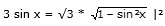

Aufgabe 236 3 sin x = √3 * cos x 3 sin x = √3 * cos x

9* sin2 x = 3 * (1 – sin2 x) 9 * sin2 x = 3 – 3 * sin2 x |+ 3 * sin2 x 12 * sin2 x = 3 |:12 3 sin2 x = ---- = 0,25 |√ 12 sin x1,2 = ± 0,5 sin x1 = 0,5 --> x1 = 30° oder 150° sin x2 = -0,5 --> x2 = 330° oder 210° Da auf dem Weg zur Lösung quadriert wurde, könnten Lösungen hinzugekommen sein. Deswegen muss zwingend eine Probe gemacht werden. Probe: 30° 3 * 0,5 = √3 * cos 30° 1 1,5 = √3 * --- * √3 2 1,5 = 1,5 150° 3 * 0,5 = √3 * cos 150° 1 1,5 = √3 * (- ---) * √3 = -1,5 2 Widerspruch, keine Lösung Lösungsmenge L = {30°}